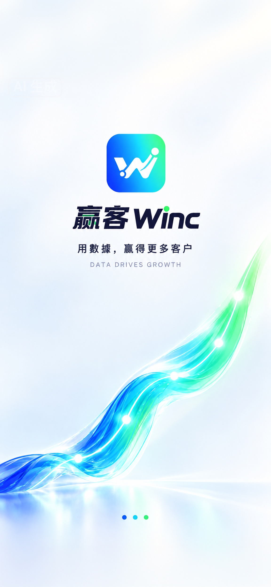
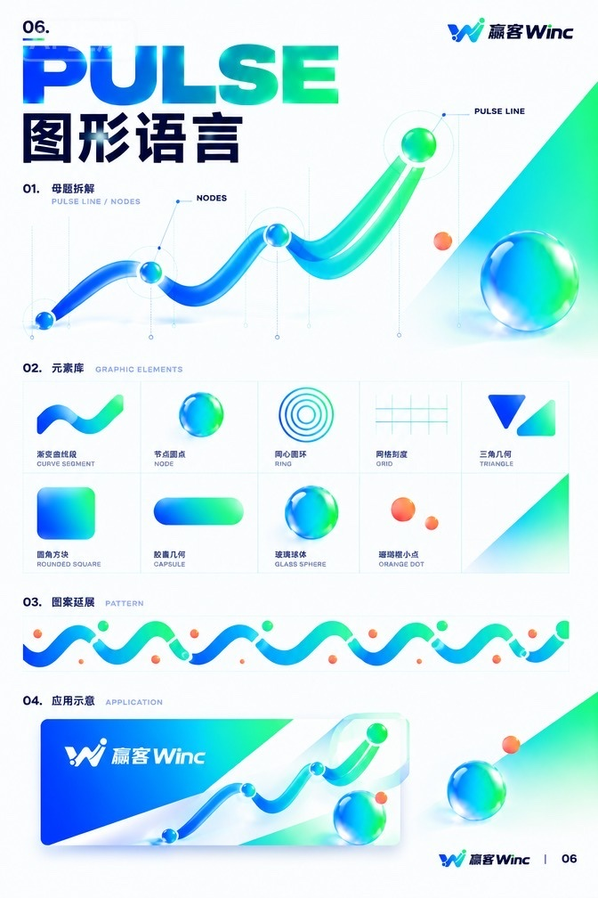
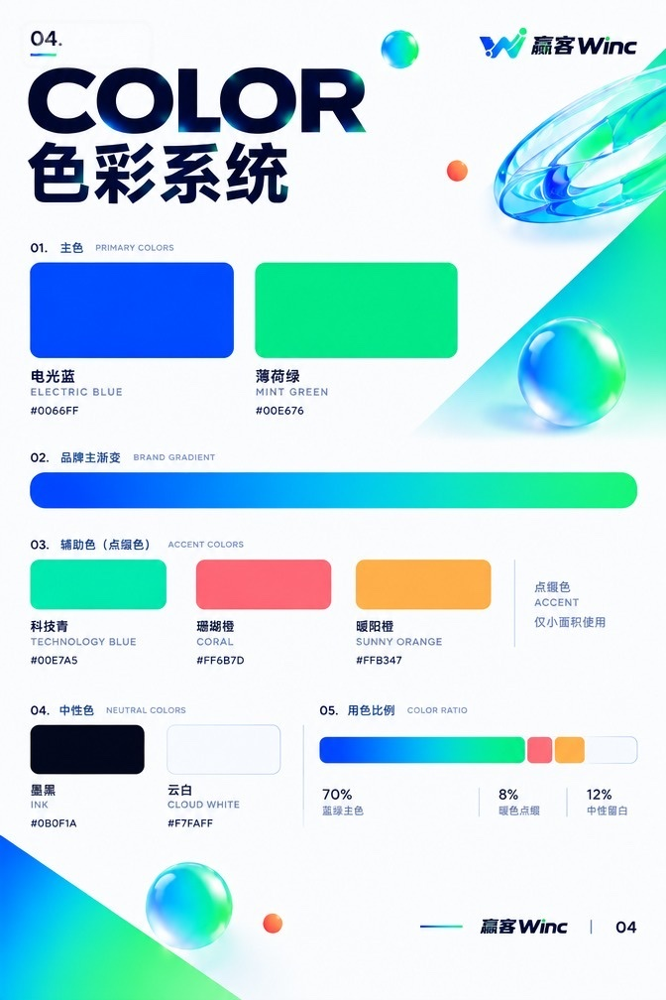
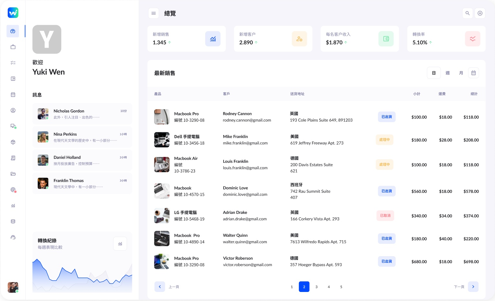
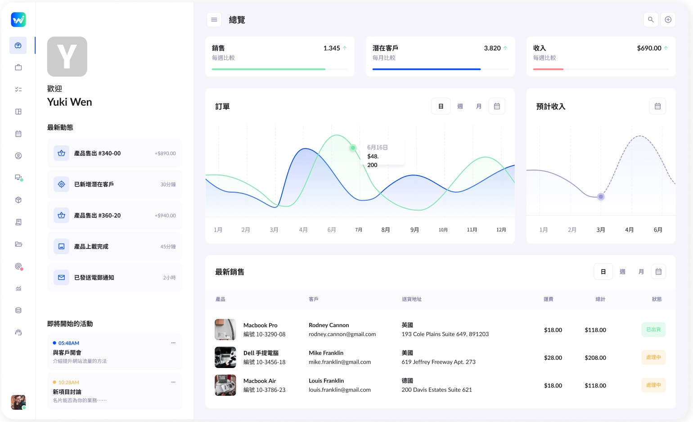
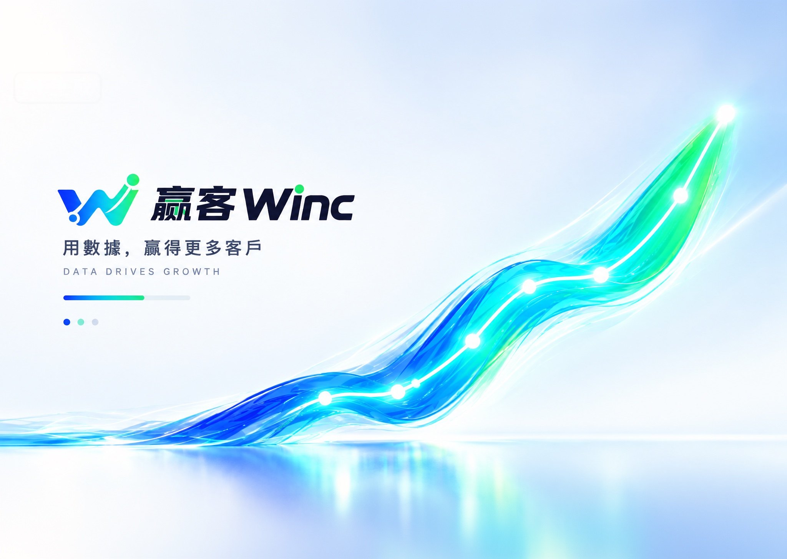
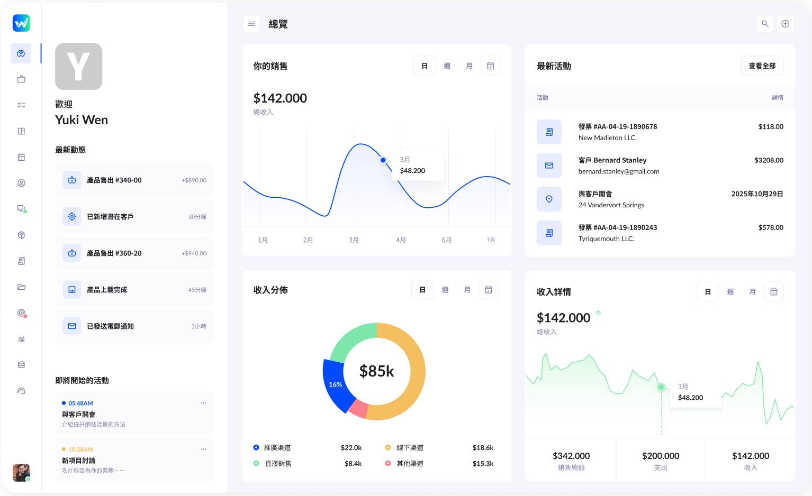
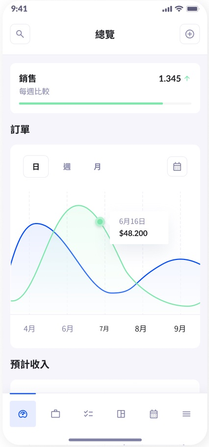

项目概览
Project WinC,
From Payments
to Growth
B+C Experience Design Portfolio
Guangzhou, China (Open to Remote)
B-End SaaS CRM & Payment System
High-Density Data Dashboard
LBS Marketing & Member Strategy
Multi-Language Web/App UI
AIGC Workflow Integration
项目背景
赢客 WinC
B端SaaS · 聚合收款 · 营销增长 · 拉美市场
全栈主设 | B+C 端 | 设计系统搭建
2023-2024（拉美/西班牙市场）
Figma | 原型设计 | 组件库搭建

关键问题
赢客 WinC ·设计优化
我们得出结论：
经营痛点只是冰山一角
Reconciliation
渠道分散，对账繁琐。
Acquisition
依赖人工，获客极高。
Retention
缺乏抓手，留存极难。
Business Loop
能力割裂，闭环断裂。
-40% 财务对账耗时 | +30% 营销转化率 | 1套 多语言组件库
品牌与系统
Brand DNA & Design System
品牌视觉
与设计系统
双核视觉体系： 建立"电光蓝（科技/信任）+ 薄荷绿（增长/活力）"的极光流体视觉语言。
高频组件沉淀： 封装适用于 Web/App 的数据看板与表单组件，确保多端界面高度一致。
AIGC 融入工作流： 结合 AI 辅助生成营销素材与界面灵感，大幅缩短产品迭代时间。


解决方案
Core Business Modules
核心业务模块
与增长策略
聚合收款与对账： 统一收款码与终端管理，简化对账流程，提升财务效率。
LBS本地化营销： 通过 LBS 推广与会员体系，提升商户获客能力与复购率。
极简 B 端交互： 搭建极简卡片式看板，以滑动与手势交互降低小微商户操作门槛。

界面交付
Web端核心
Web UI & Full-Chain Delivery
经营链路交付
全端适配： 覆盖 Web 端与移动端，满足商户随时随地经营的需求。
数据驱动： 清晰的数据图表呈现营收与化，辅助商户科学决策。


项目复盘
Multi-Language Mobile App Delivery
移动端与
多语言无缝适配
体验降本提效： 极简 App 界面让商户在手机上也能轻松查账、开票，大幅降低操作门槛。
出海本地化： 沉淀中/英/西多语言组件库，解决拉美市场视觉割裂，保障业务顺畅落地。
"用轻盈的视觉语言化解 B 端复杂业务，用严谨的设计系统保障跨境商业的高效运转。"

